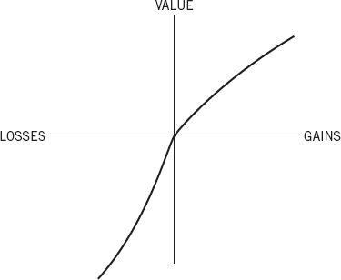
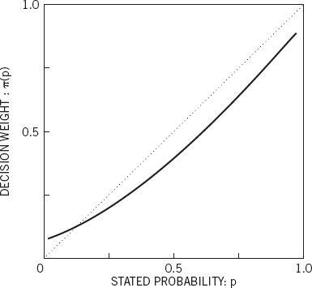

ABSTRACT: We discuss the cognitive and the psychophysical determinants of choice in risky and riskless contexts. The psychophysics of value induce risk aversion in the domain of gains and risk seeking in the domain of losses. The psychophysics of chance induce overweighting of sure things and of improbable events, relative to events of moderate probability. Decision problems can be described or framed in multiple ways that give rise to different preferences, contrary to the invariance criterion of rational choice. The process of mental accounting, in which people organize the outcomes of transactions, explains some anomalies of consumer behavior. In particular, the acceptability of an option can depend on whether a negative outcome is evaluated as a cost or as an uncompensated loss. The relation between decision values and experience values is discussed.
Making decisions is like speaking prose—people do it all the time, knowingly or unknowingly. It is hardly surprising, then, that the topic of decision making is shared by many disciplines, from mathematics and statistics, through economics and political science, to sociology and psychology. The study of decisions addresses both normative and descriptive questions. The normative analysis is concerned with the nature of rationality and the logic of decision making. The descriptive analysis, in contrast, is concerned with people’s beliefs and preferences as they are, not as they should be. The tension between normative and descriptive considerations characterizes much of the study of judgment and choice.
Analyses of decision making commonly distinguish risky and riskless choices. The paradigmatic example of decision un ^v>
Risky Choice
Risky choices, such as whether or not to take an umbrella and whether or not to go to war, are made without advance knowledge of their consequences. Because the consequences of such actions depend on uncertain events such as the weather or the opponent’s resolve, the choice of an act may be construed as the acceptance of a gamble that can yield various outcomes with different probabilities. It is therefore natural that the study of decision making under risk has focused on choices between simple gambles with monetary outcomes and specified probabilities, in the hope that these simple problems will reveal basic attitudes toward risk and value.
We shall sketch an approach to risky choice that derives many of its hypotheses from a psychophysical analysis of responses to money and to probability. The psychophysical approach to decision making can be traced to a remarkable essay that Daniel Bernoulli published in 1738 (Bernoulli 1954) in which he attempted to explain why people are generally averse to risk and why risk aversion decreases with increasing wealth. To illustrate risk aversion and Bernoulli’s analysis, consider the choice between a prospect that offers an 85% chance to win $1,000 (with a 15% chance to win nothing) and the alternative of receiving $800 for sure. A large majority of people prefer the sure thing over the gamble, although the gamble has higher (mathematical) expectation. The expectation of a monetary gamble is a weighted average, where each possible outcome is weighted by its probability of occurrence. The expectation of the gamble in this example is .85 × $1,000 + .15 × $0 = $850, which exceeds the expectation of $800 associated with the sure thing. The preference for the sure gain is an instance of risk aversion. In general, a preference for a sure outcome over a gamble that has higher or equal expectation is called risk averse, and the rejection of a sure thing in favor of a gamble of lower or equal expectation is called risk seeking.
Bernoulli suggested that people do not evaluate prospects by the expectation of their monetary outcomes, but rather by the expectation of the subjective value of these outcomes. The subjective value of a gamble is again a weighted average, but now it is the subjective value of each outcome that is weighted by its probability. To explain risk aversion within this framework, Bernoulli proposed that subjective value, or utility, is a concave function of money. In such a function, the difference between the utilities of $200 and $100, for example, is greater than the utility difference between $1,200 and $1,100. It follows from concavity that the subjective value attached to a gain of $800 is more than 80% of the value of a gain of $1,000. Consequently, the concavity of the utility function entails a risk averse preference for a sure gain of $800 over an 80% chance to win $1,000, although the two prospects have the same monetary expectation.
It is customary in decision analysis to describe the outcomes of decisions in terms of total wealth. For example, an offer to bet $20 on the toss of a fair coin is represented as a choice between an individual’s current wealth W and an even chance to move to W + $20 or to Wn indispan> – $20. This representation appears psychologically unrealistic: People do not normally think of relatively small outcomes in terms of states of wealth but rather in terms of gains, losses, and neutral outcomes (such as the maintenance of the status quo). If the effective carriers of subjective value are changes of wealth rather than ultimate states of wealth, as we propose, the psychophysical analysis of outcomes should be applied to gains and losses rather than to total assets. This assumption plays a central role in a treatment of risky choice that we called prospect theory (Kahneman and Tversky 1979). Introspection as well as psychophysical measurements suggest that subjective value is a concave function of the size of a gain. The same generalization applies to losses as well. The difference in subjective value between a loss of $200 and a loss of $100 appears greater than the difference in subjective value between a loss of $1,200 and a loss of $1,100. When the value functions for gains and for losses are pieced together, we obtain an S-shaped function of the type displayed in Figure 1.

Figure 1. A Hypothetical Value Function
The value function shown in Figure 1 is (a) defined on gains and losses rather than on total wealth, (b) concave in the domain of gains and convex in the domain of losses, and (c) considerably steeper for losses than for gains. The last property, which we label loss aversion, expresses the intuition that a loss of $X is more aversive than a gain of $X is attractive. Loss aversion explains people’s reluctance to bet on a fair coin for equal stakes: The attractiveness of the possible gain is not nearly sufficient to compensate for the aversiveness of the possible loss. For example, most respondents in a sample of undergraduates refused to stake $10 on the toss of a coin if they stood to win less than $30.
The assumption of risk aversion has played a central role in economic theory. However, just as the concavity of the value of gains entails risk aversion, the convexity of the value of losses entails risk seeking. Indeed, risk seeking in losses is a robust effect, particularly when the probabilities of loss are substantial. Consider, for example, a situation in which an individual is forced to choose between an 85% chance to lose $1,000 (with a 15% chance to lose nothing) and a sure loss of $800. A large majority of people express a preference for the gamble over the sure loss. This is a risk seeking choice because the expectation of the gamble (–$850) is inferior to the expectation of the sure loss (–$800). Risk seeking in the domain of losses has been confirmed by several investigators (Fishburn and Kochenberger 1979; Hershey and Schoemaker 1980; Payne, Laughhunn, and Crum 1980; Slovic, Fischhoff, and Lichtenstein 1982). It has also been observed with nonmonetary outcomes, such as hours of pain (Eraker and Sox 1981) and loss of human lives (Fischhoff 1983; Tversky 1977; Tversky and Kahneman 1981). Is it wrong to be risk averse in the domain of gains and risk seeking in the domain of losses? These preferences conform to compelling intuitions about the subjective value of gains and losses, and the presumption is that people should be entitled to their own values. However, we shall see that an S-shaped value function has implications that are normatively unacceptable.
To address the normative issue we turn from psychology to decision theory. Modern decision theory can be said to begin with the pioneering work of von Neumann and Morgenstern (1947), who laid down several qualitative principles, or axioms, that should g ctha211;$850)overn the preferences of a rational decision maker. Their axioms included transitivity (if A is preferred to B and B is preferred to C, then A is preferred to C), and substitution (if A is preferred to B, then an even chance to get A or C is preferred to an even chance to get B or C), along with other conditions of a more technical nature. The normative and the descriptive status of the axioms of rational choice have been the subject of extensive discussions. In particular, there is convincing evidence that people do not always obey the substitution axiom, and considerable disagreement exists about the normative merit of this axiom (e.g., Allais and Hagen 1979). However, all analyses of rational choice incorporate two principles: dominance and invariance. Dominance demands that if prospect A is at least as good as prospect B in every respect and better than B in at least one respect, then A should be preferred to B. Invariance requires that the preference order between prospects should not depend on the manner in which they are described. In particular, two versions of a choice problem that are recognized to be equivalent when shown together should elicit the same preference even when shown separately. We now show that the requirement of invariance, however elementary and innocuous it may seem, cannot generally be satisfied.
Framing of Outcomes
Risky prospects are characterized by their possible outcomes and by the probabilities of these outcomes. The same option, however, can be framed or described in different ways (Tversky and Kahneman 1981). For example, the possible outcomes of a gamble can be framed either as gains and losses relative to the status quo or as asset positions that incorporate initial wealth. Invariance requires that such changes in the description of outcomes should not alter the preference order. The following pair of problems illustrates a violation of this requirement. The total number of respondents in each problem is denoted by N, and the percentage who chose each option is indicated in parentheses.
Problem 1 (N = 152): Imagine that the U.S. is preparing for the outbreak of an unusual Asian disease, which is expected to kill 600 people. Two alternative programs to combat the disease have been proposed. Assume that the exact scientific estimates of the consequences of the programs are as follows:
If Program A is adopted, 200 people will be saved. (72%)
If Program B is adopted, there is a one-third probability that 600 people will be saved and a two-thirds probability that no people will be saved. (28%)
Which of the two programs would you favor?
The formulation of Problem 1 implicitly adopts as a reference point a state of affairs in which the disease is allowed to take its toll of 600 lives. The outcomes of the programs include the reference state and two possible gains, measured by the number of lives saved. As expected, preferences are risk averse: A clear majority of respondents prefer saving 200 lives for sure over a gamble that offers a one-third chance of saving 600 lives. Now consider another problem in which the same cover story is followed by a different description of the prospects associated with the two programs:
Problem 2 (N = 155):
If Program C is adopted, 400 people will die. (22%)
If Program D is adopted, there is a one-third probability that nobody will die and a two-thirds probability that 600 people will die. (78%)
It is easy to verify that options C and D in Problem 2 are undistinguishable in real terms from options A and B in Problem 1, respectively. The second version, however, assumes a reference state in which no one dies of the disease. The best outcome is the maintenance of this state and the alternatives are losses measured by the number of people that will die of the disease. People who evaluate options in these terms are expected to show a risk seeking preference for the gamble (option D) over the sure loss of 400 lives. Indeed, there is more risk seeking in the second version of the problem than there is risk aversion in the first.
The failure of invariance is both pervasive and robust. It is as common among sophisticated respondents as among naive ones, and it is not eliminated even when the same respondents answer both questions within a few minutes. Respondents confronted with their conflicting answers are typically puzzled. Even after rereading the problems, they still wish to be risk averse in the “lives saved” version; they wish to be risk seeking in the “lives lost” version; and they also wish to obey invariance and give consistent answers in the two versions. In their stubborn appeal, framing effects resemble perceptual illusions more than computational errors.
The following pair of problems elicits preferences that violate the dominance requirement of rational choice.
Problem 3 (N = 86): Choose between:
E. 25% chance to win $240 and 75% chance to lose $760 (0%)
F. 25% chance to win $250 and 75% chance to lose $750 (100%)
It is easy to see that F dominates E. Indeed, all respondents chose accordingly.
Problem 4 (N = 150): Imagine that you face the following pair of concurrent decisions.
First examine both decisions, then indicate the options you prefer.
Decision (i) Choose between:
A. a sure gain of $240 (84%)
B. 25% chance to gain $1,000 and 75% chance to gain nothing (16%)
Decision (ii) Choose between:
C. a sure loss of $750 (13%)
D. 75% chance to lose $1,000 and 25% chance to lose nothing (87%)
As expected from the previous analysis, a large majority of subjects made a risk averse choice for the sure gain over the positive gamble in the first decision, and an even larger majority of subjects made a risk seeking choice for the gamble over the sure loss in the second decision. In fact, 73% of the respondents chose A and D and only 3% chose B and C. The same cd Cce f pattern of results was observed in a modified version of the problem, with reduced stakes, in which undergraduates selected gambles that they would actually play.
Because the subjects considered the two decisions in Problem 4 simultaneously, they expressed in effect a preference for A and D over B and C. The preferred conjunction, however, is actually dominated by the rejected one. Adding the sure gain of $240 (option A) to option D yields a 25% chance to win $240 and a 75% chance to lose $760. This is precisely option E in Problem 3. Similarly, adding the sure loss of $750 (option C) to option B yields a 25% chance to win $250 and a 75% chance to lose $750. This is precisely option F in Problem 3. Thus, the susceptibility to framing and the S-shaped value function produce a violation of dominance in a set of concurrent decisions.
The moral of these results is disturbing: Invariance is normatively essential, intuitively compelling, and psychologically unfeasible. Indeed, we conceive only two ways of guaranteeing invariance. The first is to adopt a procedure that will transform equivalent versions of any problem into the same canonical representation. This is the rationale for the standard admonition to students of business, that they should consider each decision problem in terms of total assets rather than in terms of gains or losses (Schlaifer 1959). Such a representation would avoid the violations of invariance illustrated in the previous problems, but the advice is easier to give than to follow. Except in the context of possible ruin, it is more natural to consider financial outcomes as gains and losses rather than as states of wealth. Furthermore, a canonical representation of risky prospects requires a compounding of all outcomes of concurrent decisions (e.g., Problem 4) that exceeds the capabilities of intuitive computation even in simple problems. Achieving a canonical representation is even more difficult in other contexts such as safety, health, or quality of life. Should we advise people to evaluate the consequence of a public health policy (e.g., Problems 1 and 2) in terms of overall mortality, mortality due to diseases, or the number of deaths associated with the particular disease under study?
Another approach that could guarantee invariance is the evaluation of options in terms of their actuarial rather than their psychological consequences. The actuarial criterion has some appeal in the context of human lives, but it is clearly inadequate for financial choices, as has been generally recognized at least since Bernoulli, and it is entirely inapplicable to outcomes that lack an objective metric. We conclude that frame invariance cannot be expected to hold and that a sense of confidence in a particular choice does not ensure that the same choice would be made in another frame. It is therefore good practice to test the robustness of preferences by deliberate attempts to frame a decision problem in more than one way (Fischhoff, Slovic, and Lichtenstein 1980).
The Psychophysics of Chances
Our discussion so far has assumed a Bernoullian expectation rule according to which the value, or utility, of an uncertain prospect is obtained by adding the utilities of the possible outcomes, each weighted by its probability. To examine this assumption, let us again consult psychophysical intuitions. Setting the value of the status quo at zero, imagine a cash gift, say of $300, and assign it a value of one. Now imagine that you are only given a ticket to a lottery that has a single prize of $300. How does the value of the ticket vary as a function of the probability of winning the prize? Barring utility for gambling, the value of such a prospect must vary between zero (when the chance of winning is nil cinntric. We) and one (when winning $300 is a certainty).
Intuition suggests that the value of the ticket is not a linear function of the probability of winning, as entailed by the expectation rule. In particular, an increase from 0% to 5% appears to have a larger effect than an increase from 30% to 35%, which also appears smaller than an increase from 95% to 100%. These considerations suggest a category-boundary effect: A change from impossibility to possibility or from possibility to certainty has a bigger impact than a comparable change in the middle of the scale. This hypothesis is incorporated into the curve displayed in Figure 2, which plots the weight attached to an event as a function of its stated numerical probability. The most salient feature of Figure 2 is that decision weights are regressive with respect to stated probabilities. Except near the endpoints, an increase of .05 in the probability of winning increases the value of the prospect by less than 5% of the value of the prize. We next investigate the implications of these psychophysical hypotheses for preferences among risky options.

Figure 2. A Hypothetical Weighting Function
In Figure 2, decision weights are lower than the corresponding probabilities over most of the range. Underweighting of moderate and high probabilities relative to sure things contributes to risk aversion in gains by reducing the attractiveness of positive gambles. The same effect also contributes to risk seeking in losses by attenuating the aversiveness of negative gambles. Low probabilities, however, are overweighted, and very low probabilities are either overweighted quite grossly or neglected altogether, making the decision weights highly unstable in that region. The overweighting of low probabilities reverses the pattern described above: It enhances the value of long shots and amplifies the aversiveness of a small chance of a severe loss. Consequently, people are often risk seeking in dealing with improbable gains and risk averse in dealing with unlikely losses. Thus, the characteristics of decision weights contribute to the attractiveness of both lottery tickets and insurance policies.
The nonlinearity of decision weights inevitably leads to violations of invariance, as illustrated in the following pair of problems:
Problem 5 (N = 85): Consider the following two-stage game. In the first stage, there is a 75% chance to end the game without winning anything and a 25% chance to move into the second stage. If you reach the second stage you have a choice between:
A. a sure win of $30 (74%)
B. 80% chance to win $45 (26%)
Your choice must be made before the game starts, i.e., before the outcome of the first stage is known. Please indicate the option you prefer.
Problem 6 (N = 81): Which of the following options do you prefer?
C. 25% chance to win $30 (42%)
D. 20% chance to win $45 (58%)
Because there is one chan ce i toce in four to move into the second stage in Problem 5, prospect A offers a .25 probability of winning $30, and prospect B offers .25 × .80 = .20 probability of winning $45. Problems 5 and 6 are therefore identical in terms of probabilities and outcomes. However, the preferences are not the same in the two versions: A clear majority favors the higher chance to win the smaller amount in Problem 5, whereas the majority goes the other way in Problem 6. This violation of invariance has been confirmed with both real and hypothetical monetary payoffs (the present results are with real money), with human lives as outcomes, and with a nonsequential representation of the chance process.
We attribute the failure of invariance to the interaction of two factors: the framing of probabilities and the nonlinearity of decision weights. More specifically, we propose that in Problem 5 people ignore the first phase, which yields the same outcome regardless of the decision that is made, and focus their attention on what happens if they do reach the second stage of the game. In that case, of course, they face a sure gain if they choose option A and an 80% chance of winning if they prefer to gamble. Indeed, people’s choices in the sequential version are practically identical to the choices they make between a sure gain of $30 and an 85% chance to win $45. Because a sure thing is overweighted in comparison with events of moderate or high probability, the option that may lead to a gain of $30 is more attractive in the sequential version. We call this phenomenon the pseudo-certainty effect because an event that is actually uncertain is weighted as if it were certain.
A closely related phenomenon can be demonstrated at the low end of the probability range. Suppose you are undecided whether or not to purchase earthquake insurance because the premium is quite high. As you hesitate, your friendly insurance agent comes forth with an alternative offer: “For half the regular premium you can be fully covered if the quake occurs on an odd day of the month. This is a good deal because for half the price you are covered for more than half the days.” Why do most people find such probabilistic insurance distinctly unattractive? Figure 2 suggests an answer. Starting anywhere in the region of low probabilities, the impact on the decision weight of a reduction of probability from p to p/2 is considerably smaller than the effect of a reduction from p/2 to 0. Reducing the risk by half, then, is not worth half the premium.
The aversion to probabilistic insurance is significant for three reasons. First, it undermines the classical explanation of insurance in terms of a concave utility function. According to expected utility theory, probabilistic insurance should be definitely preferred to normal insurance when the latter is just acceptable (see Kahneman and Tversky 1979). Second, probabilistic insurance represents many forms of protective action, such as having a medical checkup, buying new tires, or installing a burglar alarm system. Such actions typically reduce the probability of some hazard without eliminating it altogether. Third, the acceptability of insurance can be manipulated by the framing of the contingencies. An insurance policy that covers fire but not flood, for example, could be evaluated either as full protection against a specific risk (e.g., fire), or as a reduction in the overall probability of property loss. Figure 2 suggests that people greatly undervalue a reduction in the probability of a hazard in comparison to the complete elimination of that hazard. Hence, insurance should appear more attractive when it is framed as the elimination of risk than when it is described as a reduction of risk. Indeed, Slovic, Fischhoff, and Lichtenstein (1982) showed that a hypotheti ct arnative cal vaccine that reduces the probability of contracting a disease from 20% to 10% is less attractive if it is described as effective in half of the cases than if it is presented as fully effective against one of two exclusive and equally probable virus strains that produce identical symptoms.
Formulation Effects
So far we have discussed framing as a tool to demonstrate failures of invariance. We now turn attention to the processes that control the framing of outcomes and events. The public health problem illustrates a formulation effect in which a change of wording from “lives saved” to “lives lost” induced a marked shift of preference from risk aversion to risk seeking. Evidently, the subjects adopted the descriptions of the outcomes as given in the question and evaluated the outcomes accordingly as gains or losses. Another formulation effect was reported by McNeil, Pauker, Sox, and Tversky (1982). They found that preferences of physicians and patients between hypothetical therapies for lung cancer varied markedly when their probable outcomes were described in terms of mortality or survival. Surgery, unlike radiation therapy, entails a risk of death during treatment. As a consequence, the surgery option was relatively less attractive when the statistics of treatment outcomes were described in terms of mortality rather than in terms of survival.
A physician, and perhaps a presidential advisor as well, could influence the decision made by the patient or by the President, without distorting or suppressing information, merely by the framing of outcomes and contingencies. Formulation effects can occur fortuitously, without anyone being aware of the impact of the frame on the ultimate decision. They can also be exploited deliberately to manipulate the relative attractiveness of options. For example, Thaler (1980) noted that lobbyists for the credit card industry insisted that any price difference between cash and credit purchases be labeled a cash discount rather than a credit card surcharge. The two labels frame the price difference as a gain or as a loss by implicitly designating either the lower or the higher price as normal. Because losses loom larger than gains, consumers are less likely to accept a surcharge than to forgo a discount. As is to be expected, attempts to influence framing are common in the marketplace and in the political arena.
The evaluation of outcomes is susceptible to formulation effects because of the nonlinearity of the value function and the tendency of people to evaluate options in relation to the reference point that is suggested or implied by the statement of the problem. It is worthy of note that in other contexts people automatically transform equivalent messages into the same representation. Studies of language comprehension indicate that people quickly recode much of what they hear into an abstract representation that no longer distinguishes whether the idea was expressed in an active or in a passive form and no longer discriminates what was actually said from what was implied, presupposed, or implicated (Clark and Clark 1977). Unfortunately, the mental machinery that performs these operations silently and effortlessly is not adequate to perform the task of recoding the two versions of the public health problem or the mortality survival statistics into a common abstract form.
Transactions and Trades
Our analysis of framing and of value can be extended to choices between multiattribute options, such as the acceptability of a transaction or a trade. We propose that, in order to evaluate a multiattribute option, a person sets up a men cset optiotal account that specifies the advantages and the disadvantages associated with the option, relative to a multiattribute reference state. The overall value of an option is given by the balance of its advantages and its disadvantages in relation to the reference state. Thus, an option is acceptable if the value of its advantages exceeds the value of its disadvantages. This analysis assumes psychological—but not physical—separability of advantages and disadvantages. The model does not constrain the manner in which separate attributes are combined to form overall measures of advantage and of disadvantage, but it imposes on these measures assumptions of concavity and of loss aversion.
Our analysis of mental accounting owes a large debt to the stimulating work of Richard Thaler (1980, 1985), who showed the relevance of this process to consumer behavior. The following problem, based on examples of Savage (1954) and Thaler (1980), introduces some of the rules that govern the construction of mental accounts and illustrates the extension of the concavity of value to the acceptability of transactions.
Problem 7: Imagine that you are about to purchase a jacket for $125 and a calculator for $15. The calculator salesman informs you that the calculator you wish to buy is on sale for $10 at the other branch of the store, located 20 minutes’ drive away. Would you make a trip to the other store?
This problem is concerned with the acceptability of an option that combines a disadvantage of inconvenience with a financial advantage that can be framed as a minimal, topical, or comprehensive account. The minimal account includes only the differences between the two options and disregards the features that they share. In the minimal account, the advantage associated with driving to the other store is framed as a gain of $5. A topical account relates the consequences of possible choices to a reference level that is determined by the context within which the decision arises. In the preceding problem, the relevant topic is the purchase of the calculator, and the benefit of the trip is therefore framed as a reduction of the price, from $15 to $10. Because the potential saving is associated only with the calculator, the price of the jacket is not included in the topical account. The price of the jacket, as well as other expenses, could well be included in a more comprehensive account in which the saving would be evaluated in relation to, say, monthly expenses.
The formulation of the preceding problem appears neutral with respect to the adoption of a minimal, topical, or comprehensive account. We suggest, however, that people will spontaneously frame decisions in terms of topical accounts that, in the context of decision making, play a role analogous to that of “good forms” in perception and of basic-level categories in cognition. Topical organization, in conjunction with the concavity of value, entails that the willingness to travel to the other store for a saving of $5 on a calculator should be inversely related to the price of the calculator and should be independent of the price of the jacket. To test this prediction, we constructed another version of the problem in which the prices of the two items were interchanged. The price of the calculator was given as $125 in the first store and $120 in the other branch, and the price of the jacket was set at $15. As predicted, the proportions of respondents who said they would make the trip differed sharply in the two problems. The results showed that 68% of the respondents (N = 88) were willing to drive to the other branch to save $5 on a $15 calculator, but only 29% of 93 respondents were willing to make the same trip to save $5 on a $125 calculator. This finding cThinchsupports the notion of topical organization of accounts, since the two versions are identical both in terms of a minimal and a comprehensive account.
The significance of topical accounts for consumer behavior is confirmed by the observation that the standard deviation of the prices that different stores in a city quote for the same product is roughly proportional to the average price of that product (Pratt, Wise, and Zeckhauser 1979). Since the dispersion of prices is surely controlled by shoppers’ efforts to find the best buy, these results suggest that consumers hardly exert more effort to save $15 on a $150 purchase than to save $5 on a $50 purchase.
The topical organization of mental accounts leads people to evaluate gains and losses in relative rather than in absolute terms, resulting in large variations in the rate at which money is exchanged for other things, such as the number of phone calls made to find a good buy or the willingness to drive a long distance to get one. Most consumers will find it easier to buy a car stereo system or a Persian rug, respectively, in the context of buying a car or a house than separately. These observations, of course, run counter to the standard rational theory of consumer behavior, which assumes invariance and does not recognize the effects of mental accounting.
The following problems illustrate another example of mental accounting in which the posting of a cost to an account is controlled by topical organization:
Problem 8 (N= 200): Imagine that you have decided to see a play and paid the admission price of $10 per ticket. As you enter the theater, you discover that you have lost the ticket. The seat was not marked, and the ticket cannot be recovered.
Would you pay $10 for another ticket?
Yes (46%) No (54%)
Problem 9 (N= 183): Imagine that you have decided to see a play where admission is $10 per ticket. As you enter the theater, you discover that you have lost a $10 bill.
Would you still pay $10 for a ticket for the play?
Yes (88%) No (12%)
The difference between the responses to the two problems is intriguing. Why are so many people unwilling to spend $10 after having lost a ticket, if they would readily spend that sum after losing an equivalent amount of cash? We attribute the difference to the topical organization of mental accounts. Going to the theater is normally viewed as a transaction in which the cost of the ticket is exchanged for the experience of seeing the play. Buying a second ticket increases the cost of seeing the play to a level that many respondents apparently find unacceptable. In contrast, the loss of the cash is not posted to the account of the play, and it affects the purchase of a ticket only by making the individual feel slightly less affluent.
An interesting effect was observed when the two versions of the problem were presented to the same subjects. The willingness to replace a lost ticket increased significantly when that problem followed the lost-cash version. In contrast, the willingness to buy a ticket after losing cash was not affected by prior presentation of the other problem. The juxtaposition of the two problems apparent clemosition ly enabled the subjects to realize that it makes sense to think of the lost ticket as lost cash, but not vice versa.
The normative status of the effects of mental accounting is questionable. Unlike earlier examples, such as the public health problem, in which the two versions differed only in form, it can be argued that the alternative versions of the calculator and ticket problems differ also in substance. In particular, it may be more pleasurable to save $5 on a $15 purchase than on a larger purchase, and it may be more annoying to pay twice for the same ticket than to lose $10 in cash. Regret, frustration, and self-satisfaction can also be affected by framing (Kahneman and Tversky 1982). If such secondary consequences are considered legitimate, then the observed preferences do not violate the criterion of invariance and cannot readily be ruled out as inconsistent or erroneous. On the other hand, secondary consequences may change upon reflection. The satisfaction of saving $5 on a $15 item can be marred if the consumer discovers that she would not have exerted the same effort to save $10 on a $200 purchase. We do not wish to recommend that any two decision problems that have the same primary consequences should be resolved in the same way. We propose, however, that systematic examination of alternative framings offers a useful reflective device that can help decision makers assess the values that should be attached to the primary and secondary consequences of their choices.
Losses and Costs
Many decision problems take the form of a choice between retaining the status quo and accepting an alternative to it, which is advantageous in some respects and disadvantageous in others. The analysis of value that was applied earlier to unidimensional risky prospects can be extended to this case by assuming that the status quo defines the reference level for all attributes. The advantages of alternative options will then be evaluated as gains and their disadvantages as losses. Because losses loom larger than gains, the decision maker will be biased in favor of retaining the status quo.
Thaler (1980) coined the term “endowment effect” to describe the reluctance of people to part from assets that belong to their endowment. When it is more painful to give up an asset than it is pleasurable to obtain it, buying prices will be significantly lower than selling prices. That is, the highest price that an individual will pay to acquire an asset will be smaller than the minimal compensation that would induce the same individual to give up that asset, once acquired. Thaler discussed some examples of the endowment effect in the behavior of consumers and entrepreneurs. Several studies have reported substantial discrepancies between buying and selling prices in both hypothetical and real transactions (Gregory 1983; Hammack and Brown 1974; Knetsch and Sinden 1984). These results have been presented as challenges to standard economic theory, in which buying and selling prices coincide except for transaction costs and effects of wealth. We also observed reluctance to trade in a study of choices between hypothetical jobs that differed in weekly salary (S) and in the temperature (T) of the workplace. Our respondents were asked to imagine that they held a particular position (S1, T1) and were offered the option of moving to a different position (S2, T2), which was better in one respect and worse in another. We found that most subjects who were assigned to (S1, T1) did not wish to move to (S2, T2), and c2< that most subjects who were assigned to the latter position did not wish to move to the former. Evidently, the same difference in pay or in working conditions looms larger as a disadvantage than as an advantage.
In general, loss aversion favors stability over change. Imagine two hedonically identical twins who find two alternative environments equally attractive. Imagine further that by force of circumstance the twins are separated and placed in the two environments. As soon as they adopt their new states as reference points and evaluate the advantages and disadvantages of each other’s environments accordingly, the twins will no longer be indifferent between the two states, and both will prefer to stay where they happen to be. Thus, the instability of preferences produces a preference for stability. In addition to favoring stability over change, the combination of adaptation and loss aversion provides limited protection against regret and envy by reducing the attractiveness of foregone alternatives and of others’ endowments.
Loss aversion and the consequent endowment effect are unlikely to play a significant role in routine economic exchanges. The owner of a store, for example, does not experience money paid to suppliers as losses and money received from customers as gains. Instead, the merchant adds costs and revenues over some period of time and only evaluates the balance. Matching debits and credits are effectively canceled prior to evaluation. Payments made by consumers are also not evaluated as losses but as alternative purchases. In accord with standard economic analysis, money is naturally viewed as a proxy for the goods and services that it could buy. This mode of evaluation is made explicit when an individual has in mind a particular alternative, such as, “I can either buy a new camera or a new tent.” In this analysis, a person will buy a camera if its subjective value exceeds the value of retaining the money it would cost.
There are cases in which a disadvantage can be framed either as a cost or as a loss. In particular, the purchase of insurance can also be framed as a choice between a sure loss and the risk of a greater loss. In such cases the cost-loss discrepancy can lead to failures of invariance. Consider, for example, the choice between a sure loss of $50 and a 25% chance to lose $200. Slovic, Fischhoff, and Lichtenstein (1982) reported that 80% of their subjects expressed a risk-seeking preference for the gamble over the sure loss. However, only 35% of subjects refused to pay $50 for insurance against a 25% risk of losing $200. Similar results were also reported by Schoemaker and Kunreuther (1979) and by Hershey and Schoemaker (1980). We suggest that the same amount of money that was framed as an uncompensated loss in the first problem was framed as the cost of protection in the second. The modal preference was reversed in the two problems because losses are more aversive than costs.
We have observed a similar effect in the positive domain, as illustrated by the following pair of problems:
Problem 10: Would you accept a gamble that offers a 10% chance to win $95 and a 90% chance to lose $5?
Problem 11: Would you pay $5 to participate in a lottery that offers a 10% chance to win $100 and a 90% chance to win nothing?
A total of 132 undergraduates answered the two questions, which were separated by a short filler problem. The order of the questions was reversed for half the respondents. Although it is easily confirmed that the two problems offer objecti coffler problevely identical options, 55 of the respondents expressed different preferences in the two versions. Among them, 42 rejected the gamble in Problem 10 but accepted the equivalent lottery in Problem 11. The effectiveness of this seemingly inconsequential manipulation illustrates both the cost-loss discrepancy and the power of framing. Thinking of the $5 as a payment makes the venture more acceptable than thinking of the same amount as a loss.
The preceding analysis implies that an individual’s subjective state can be improved by framing negative outcomes as costs rather than as losses. The possibility of such psychological manipulations may explain a paradoxical form of behavior that could be labeled the dead-loss effect. Thaler (1980) discussed the example of a man who develops tennis elbow soon after paying the membership fee in a tennis club and continues to play in agony to avoid wasting his investment. Assuming that the individual would not play if he had not paid the membership fee, the question arises: How can playing in agony improve the individual’s lot? Playing in pain, we suggest, maintains the evaluation of the membership fee as a cost. If the individual were to stop playing, he would be forced to recognize the fee as a dead loss, which may be more aversive than playing in pain.
Concluding Remarks
The concepts of utility and value are commonly used in two distinct senses: (a) experience value, the degree of pleasure or pain, satisfaction or anguish in the actual experience of an outcome; and (b) decision value, the contribution of an anticipated outcome to the overall attractiveness or aversiveness of an option in a choice. The distinction is rarely explicit in decision theory because it is tacitly assumed that decision values and experience values coincide. This assumption is part of the conception of an idealized decision maker who is able to predict future experiences with perfect accuracy and evaluate options accordingly. For ordinary decision makers, however, the correspondence of decision values between experience values is far from perfect (March 1978). Some factors that affect experience are not easily anticipated, and some factors that affect decisions do not have a comparable impact on the experience of outcomes.
In contrast to the large amount of research on decision making, there has been relatively little systematic exploration of the psychophysics that relate hedonic experience to objective states. The most basic problem of hedonic psychophysics is the determination of the level of adaptation or aspiration that separates positive from negative outcomes. The hedonic reference point is largely determined by the objective status quo, but it is also affected by expectations and social comparisons. An objective improvement can be experienced as a loss, for example, when an employee receives a smaller raise than everyone else in the office. The experience of pleasure or pain associated with a change of state is also critically dependent on the dynamics of hedonic adaptation. Brickman and Campbell’s (1971) concept of the hedonic treadmill suggests the radical hypothesis that rapid adaptation will cause the effects of any objective improvement to be short-lived. The complexity and subtlety of hedonic experience make it difficult for the decision maker to anticipate the actual experience that outcomes will produce. Many a person who ordered a meal when ravenously hungry has admitted to a big mistake when the fifth course arrived on the table. The common mismatch of decision values and experience values introduces an additional element of uncertainty in many decision problems.
The prevalence of framing effects and violations of invariance further complicates the relati ces maker won between decision values and experience values. The framing of outcomes often induces decision values that have no counterpart in actual experience. For example, the framing of outcomes of therapies for lung cancer in terms of mortality or survival is unlikely to affect experience, although it can have a pronounced influence on choice. In other cases, however, the framing of decisions affects not only decision but experience as well. For example, the framing of an expenditure as an uncompensated loss or as the price of insurance can probably influence the experience of that outcome. In such cases, the evaluation of outcomes in the context of decisions not only anticipates experience but also molds it.
References
Allais, M., and O. Hagen, eds. 1979. Expected Utility Hypotheses and the Allais Paradox. Hingham, MA: D. Reidel.
Bernoulli, D. 1954 [1738]. “Exposition of a New Theory on the Measurement of Risk.” Econometrica 22: 23–36.
Brickman, P., and D. T. Campbell. 1971. “Hedonic Relativism and Planning the Good Society.” In Adaptation Level Theory: A Symposium, ed. M. H. Appley. New York: Academic Press, 287–302.
Clark, H. H., and E. V. Clark. 1977. Psychology and Language. New York: Harcourt.
Erakar, S. E., and H. C. Sox. 1981. “Assessment of Patients’ Preferences for Therapeutic Outcomes.” Medical Decision Making 1: 29–39.
Fischhoff, B. 1983. “Predicting Frames.” Journal of Experimental Psychology: Learning, Memory and Cognition 9: 103–16.
Fischhoff, B., P. Slovic, and S. Lichtenstein. 1980. “Knowing What You Want: Measuring Labile Values.” In Cognitive Processes in Choice and Decision Behavior, ed. T. Wallsten. Hillsdale, NJ: Erlbaum, 117–41.
Fishburn, P. C., and G. A. Kochenberger. 1979. “Two-Piece von Neumann–Morgenstern Utility Functions.” Decision Sciences 10: 503–18.
Gregory, R. 1983. “Measures of Consumer’s Surplus: Reasons for the Disparity in Observed Values.” Unpublished manuscript, Keene State College, Keene, NH.
Hammack, J., and G. M. Brown Jr. 1974. Waterfowl and Wetlands: Toward Bioeconomic Analysis. Baltimore: Johns Hopkins University Press.
Hershey, J. C., and P. J. H. Schoemaker. 1980. “Risk Taking and Problem Context in the Domain of Losses: An Expected-Utility Analysis.” Journal of Risk and Insurance 47: 111–32.
Kahneman, D., and A. Tversky. 1979. “Prospect Theory: An Analysis of Decision under Risk.” Econometrica 47: 263–91.
———. 1982. “The Simulation Heuristic.” In Judgment Under Uncertainty: Heuristics and Biases, ed. D. Kahneman, P. Slovic, and A. Tver c, aistsky. New York: Cambridge University Press, 201–208.
Knetsch, J., and J. Sinden. 1984. “Willingness to Pay and Compensation Demanded: Experimental Evidence of an Unexpected Disparity in Measures of Value.” Quarterly Journal of Economics 99: 507–21.
March, J. G. 1978. “Bounded Rationality, Ambiguity, and the Engineering of Choice.” Bell Journal of Economics 9: 587–608.
McNeil, B., S. Pauker, H. Sox Jr., and A. Tversky. 1982. “On the Elicitation of Preferences for Alternative Therapies.” New England Journal of Medicine 306: 1259–62.
Payne, J. W., D. J. Laughhunn, and R. Crum. 1980. “Translation of Gambles and Aspiration Level Effects in Risky Choice Behavior.” Management Science 26: 1039–60.
Pratt, J. W., D. Wise, and R. Zeckhauser. 1979. “Price Differences in Almost Competitive Markets.” Quarterly Journal of Economics 93: 189–211.
Savage, L. J. 1954. The Foundation of Statistics. New York: Wiley.
Schlaifer, R. 1959. Probability and Statistics for Business Decisions. New York: McGraw-Hill.
Schoemaker, P.J.H., and H. C. Kunreuther. 1979. “An Experimental Study of Insurance Decisions.” Journal of Risk and Insurance 46: 603–18.
Slovic, P., B. Fischhoff, and S. Lichtenstein. 1982. “Response Mode, Framing, and InformationProcessing Effects in Risk Assessment.” In New Directions for Methodology of Social and Behavioral Science: Question Framing and Response Consistency, ed. R. Hogarth. San Francisco: Jossey-Bass, 21–36.
Thaler, R. 1980. “Toward a Positive Theory of Consumer Choice.” Journal of Economic Behavior and Organization 1: 39–60.
———. 1985. “Using Mental Accounting in a Theory of Consumer Behavior.” Marketing Science 4: 199–214.
Tversky, A. 1977. “On the Elicitation of Preferences: Descriptive and Prescriptive Considerations.” In Conflicting Objectives in Decisions, ed. D. Bell, R. L. Kenney, and H. Raiffa. New York: Wiley, 209–22.
Tversky, A., and D. Kahneman. 1981. “The Framing of Decisions and the Psychology of Choice.” Science 211: 453–58.
von Neumann, J., and O. Morgenstern. 1947. Theory of Games and Economic Behavior, 2nd ed. Princeton: Princeton University Press.
P